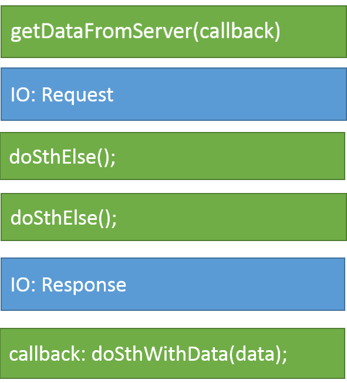
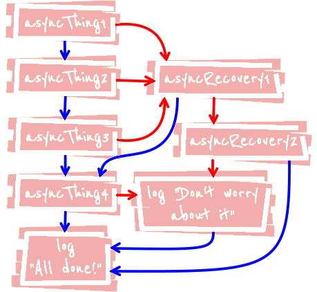
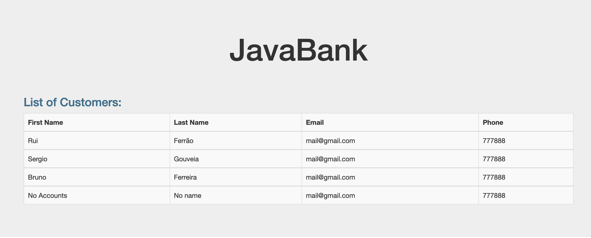

JavaScript is a single threaded, concurrent, non-blocking and asynchronous programming language
The JavaScript engine runs inside an execution
environment
such as the Browser or Node.js
This environment exposes many APIs to the JavaScript engine, such as the DOM or XMLHttpRequest (browser) or the Timers (both)

JavaScript has a concurrency model based on an event loop
 This model is quite different from models in other
languages like C and Java
This model is quite different from models in other
languages like C and Java 
Browser APIs expose operations that can run
concurrently
using a small number of threads
const elem = document.querySelector("#app");
let counter = 0;
// to be called every 1s
function timerCallback() {
counter++;
elem.innerHTML = `Counter: ${counter}`;
}
setInterval(timerCallback, 1000);
Such operations result in a
callback function
to be executed by the
JavaScript runtime
When the Call Stack is empty, the Event Loop takes the first callback from the Event Queue and places it at the top of the Call Stack for execution
console.log('start');
setTimeout(function() {
console.log('setTimeout');
}, 0);
console.log('end');
// start, end, setTimeout
Each iteration of the event loop is called a tick
Browsers rendering engine executes
in the same thread
as the JavaScript
runtime
Rendering events have higher priority for
execution
and will be fetched from the queue
first
// what happens if we run this?
while (true) {}
The event loop will not fetch anything from the
queue
if the call stack is not empty
A function is called a Callback when it is passed as an argument to another function for later execution
Callbacks can be invoked synchronously or asynchronously:
// synchronous callback
function isOdd(num) {
return num % 2;
}
const numbers = [1, 5, 8, 19, 232, 456];
const oddNumbers = numbers.filter(isOdd);
All isOdd callback invocations end
// asynchronous callback
function ring() {
console.log('RING!');
}
setInterval(ring, 1000);
The invoking setInterval function ends
before the ring callback is
invoked
To handle I/O operations, two different API models exists:
function doSthWithData(data) { ... }
const data = getDataFromServer();
doSthWithData(data);
doSthElse();
doSthElse();

function doSthWithData(data) { ... }
getDataFromServer(doSthWithData);
doSthElse();
doSthElse();



Handling errors inside async callbacks present some challenges
/* this pattern DOES NOT work! */
function doAsyncTask(callback) {
setTimeout(() => {
// Simulate an error
if(/* Something went wrong*/) {
throw new Error('Something went wrong!');
}
callback('Data');
}, 1000);
}
function mainFunction() {
try {
doAsyncTask(function(data){
console.log('Data:', data);
});
} catch (error) {
console.error('Caught an error:', error);
}
}
/* Application will blow up with Uncaught Error and mainFunction call will not be present on stack trace */
mainFunction();
A separate error callback or
callback error argument is required
to
pass error details from inside an async callback
function doAsyncTask(callback) {
setTimeout(() => {
// Simulate an error
if(/* Something went wrong*/) {
callback(new Error('Async operation failed!'))
return;
}
callback(null,'Data');
}, 1000);
}
function handleResult(error, data) {
if(error) {
console.error('Caught an async error:', error.message);
return;
}
console.log('Async operation completed successfully:', data);
}
function mainFunction() {
doAsyncTask(handleResult);
}
mainFunction();
Error first callbacks are a well know and established pattern
Two very important aspects of synchronous code
for function composition are:
try {
const result = func3(func2(funct1()));
} catch (error) {
// handle error
}
With async callbacks we have lost both aspects!
let result;
f1(function(err, data) {
if (err) {
// handle error
return;
}
result = data;
});
const f1 = function(cb) {
f2(function(error, result) {
if (error) { cb(error); }
f3(function(error, result) {
cb(null, result);
});
})
});
let result;
const temporaryResults = [];
f1(function (err, result) {
if (err) {
/* process error */ return;
}
finished(result);
});
f2(function (err, result) {
if (err) {
/* process error */ return;
}
finished(result);
});
f3(function (err, result) {
if (err) {
/* process error */ return;
}
finished(result);
});
function finished(data) {
temporaryResults.push(data);
if (temporaryResults.length === 3) {
result = temporaryResults[0] + temporaryResults[1] + temporaryResults[2];
}
}
An abstraction built on top of callbacks that gives
us back
functional composition and
error bubbling in the async world
A Promise object represents the
eventual completion (or failure)
of an
asynchronous operation and its resulting value
const result = f1()
.then(f2)
.then(f3)
.catch(function (error) {
// handle error
});
const result = Promise.all([f1(), f2(), f3()])
.then(function (results) {
return results[0] + results[1] + results[2];
})
.catch(function (error) {
// handle error
});
Un-invert the chain of responsibility:
instead
of calling a passed callback, return a promise
A promise can be created using a constructor
function,
after which it will be in one of the
following states:
const promise = new Promise(function (resolve, reject) {
const { success = false, data = null, errorMsg = null } = doSomethingAsync();
if (success) {
resolve(data); // promise will be resolved
} else {
reject(new Error(errorMsg)); // promise will be rejected
}
});
The constructor receives an
async function callback with methods for
resolving or rejecting the promise
A promise is a an thenable object to which callbacks can be attached
promise.then(
function (result) {
// invoked when the promise is resolved with the data
console.log(result); // will print the data
},
function (err) {
// invoked when the promise is rejected with an error
console.error(err);
},
);
then takes two optional arguments,
a
callback for success and another for failure
Promises can be chained together to transform values
or
run additional async actions one after
another
const promise = doSomethingAsync();
promise
.then(doSomethingElseAsync)
.then(doSomethingElseAsync)
.then(doSomethingElseAsync, handleSpecificError)
.then(doSomethingElseAsync)
.then(doSomethingElseAsync)
.catch(handleGenericError)
.finally(alwaysRunThis);
Each then method returns a new promise, which
can be chained with another then or
catch
handlers
Both specific and generic error
handling callbacks can be attached to
promises
A promise object that can be resolved or rejected and to which we can attach handlers to be executed when the promise is settled
When chained together we can create a flow of async actions that will be executed one after another
And complex async flows can be achieved

asyncThing1().then(function() {
return asyncThing2();
}).then(function() {
return asyncThing3();
}).catch(function(err) {
return asyncRecovery1();
}).then(function() {
return asyncThing4();
}, function(err) {
return asyncRecovery2();
}).catch(function(err) {
console.log("Don't worry about it");
}).then(function() {
console.log("All done!");
});
blue lines for promises that fulfill or red for ones that reject

It is possible to create settled promises
without actually performing any async action
function doSomethingAsync() {
if (/* some condition */) {
return new Promise(asyncCallback); // do async operation
}
// make sure we always return a promise, even if no async code has been executed
if (/* other condition */) {
return Promise.resolve(value);
} else {
return Promise.reject(new Error());
}
}
doSomethingAsync().then(onSuccess).catch(onError);
Since a promise is always returned, we can use then
and catch callback methods
Parallel promises fulfill when
all of the promises have fulfilled or
reject as soon as one of the promises reject
const promise = Promise.all([
doSomethingAsync(),
doSomethingAsync(),
doSomethingAsync().catch(handleSpecificError),
doSomethingAsync()
]).catch(handleGenericError);
It fulfills with an array of the values
and rejects with the
reason from the first promise that rejected
It is possible to settle a promise as soon as one of many promises settles
var promise = Promise.race([
doSomethingAsync(),
doSomethingAsync(),
doSomethingAsync().catch(handleSpecificError),
doSomethingAsync()
]).catch(handleGenericError);
Used when interested only in one of the results
AJAX is a technique for creating better, faster and more interactive client-side web applications that allows loading data from a server without doing a full page refresh
It is based on a subset of JavaScript and widely used in web applications to exchange data between the client and the server
// a plain js object
const obj = { ticker: "AAPL", name: "Apple Inc" };
// serialize an object into a JSON string
const serObj = JSON.stringify(obj);
console.log(typeof obj); // 'object'
console.log(typeof serObj); // 'string'
console.log(serObj); //'{"ticker":"AAPL","name":"Apple Inc"}'
console.log(serObj.name); // undefined
// deserialize a JSON string into an object
const deSerObj = JSON.parse(serObj);
console.log(typeof deSerObj); // 'object'
console.log(deSerObj.name); // 'Apple Inc'
The Fetch API provides a promise based JavaScript interface for accessing and manipulating parts of the HTTP pipeline, such as requests and responses.
// a GET request
function getData(url) {
fetch(url)
.then((response) => response.json())
.then((data) => console.log(data))
.catch((error) => console.error(error));
}
// a POST request
function postData(data, url) {
fetch(url, {
method: "POST",
headers: {
"Content-Type": "application/json",
},
body: JSON.stringify(data),
})
.then((response) => response.json())
.then((result) => console.log(result))
.catch((error) => console.error(error));
Load the customers from the JavaBank REST API using Fetch
